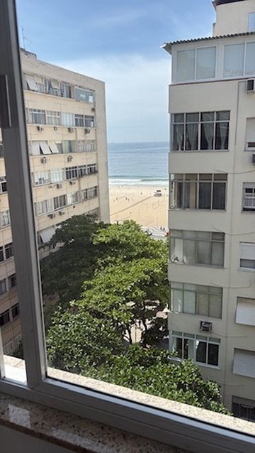
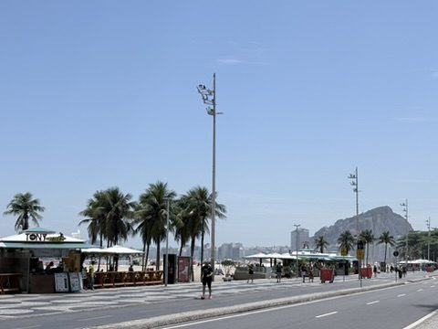
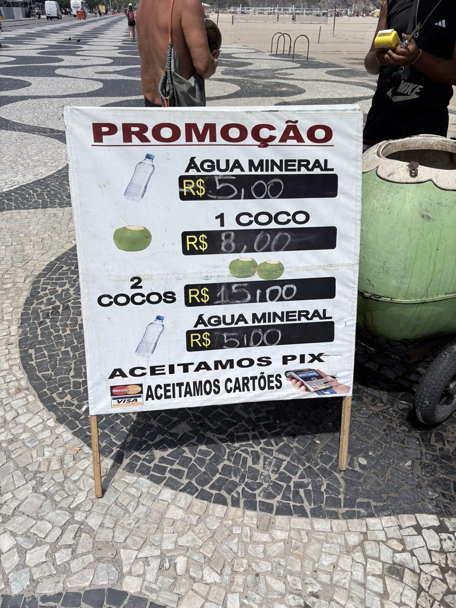
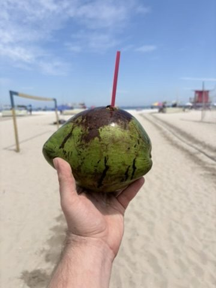
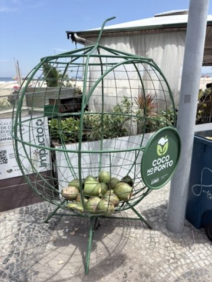
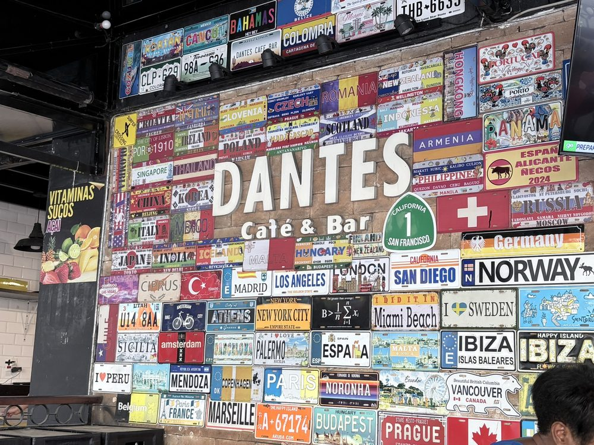
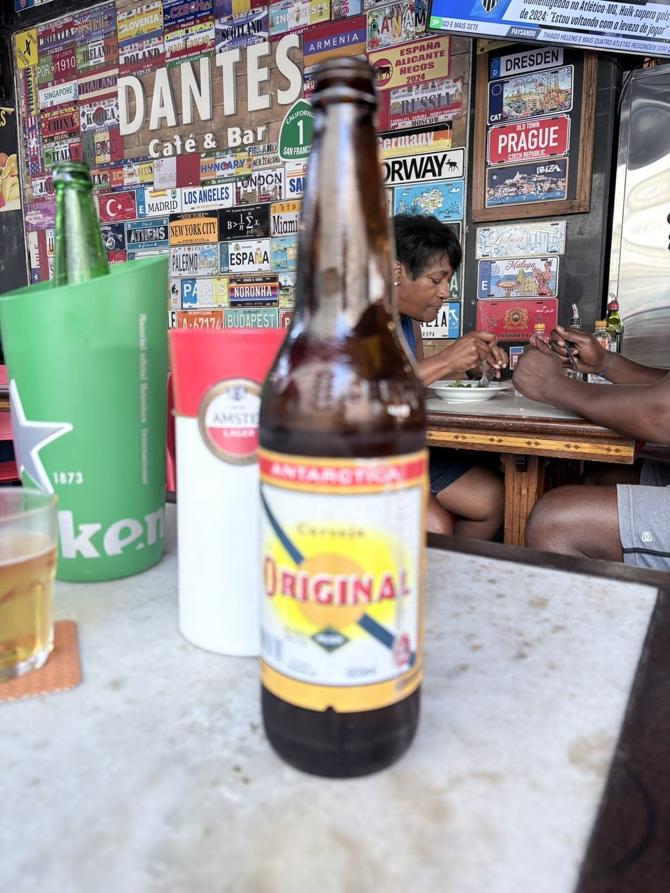
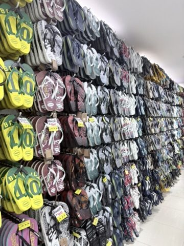
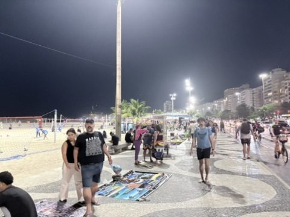
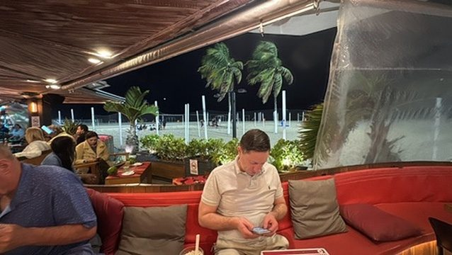

Via Rome: From Cologne via Rome to Rio: lounge in Fiumicino, then overnight across the Atlantic. Early in the morning we land at Galeão, Rio's international airport on Ilha do Governador, and join the immigration queue.
Leme and Copacabana: Our apartment is in Leme, the quieter eastern end of Copacabana below Morro do Leme. First stop: the beach. A coconut for a few reais, feet in the sand, the silhouette of the hills behind us.



"Coco gelado": ice-cold coconut, the beach staple.





Havaianas, Brazil's most famous flip-flops, have been around since 1962 – here in every colour.


To finish, a fresh juice – Rio's sucos are in a class of their own.